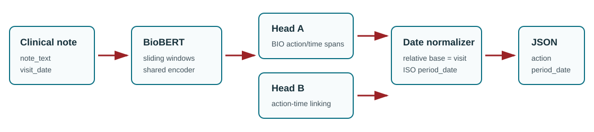
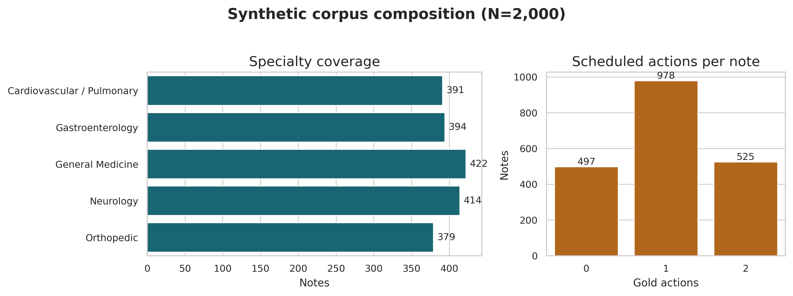
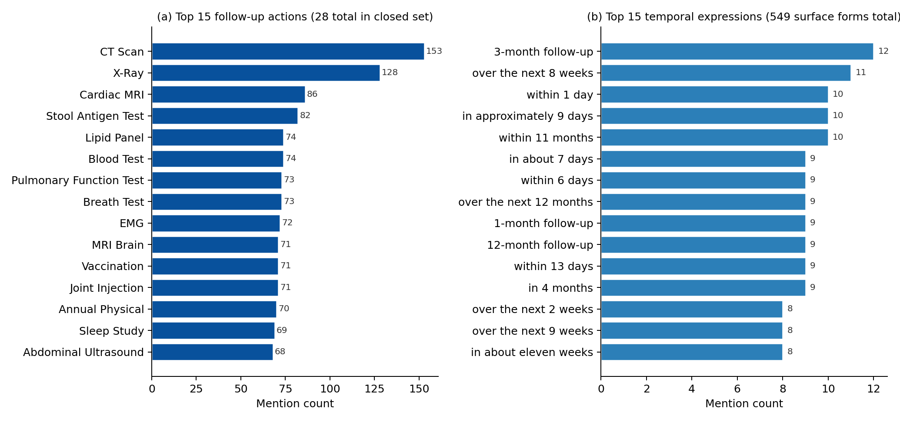
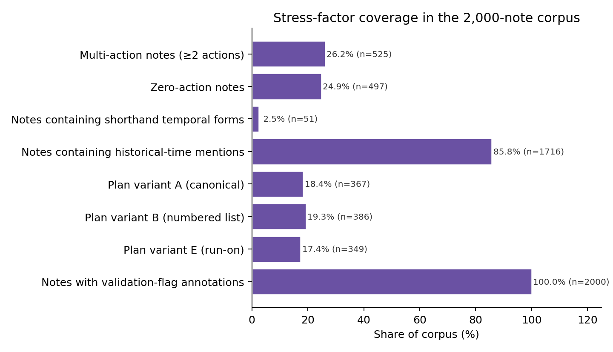
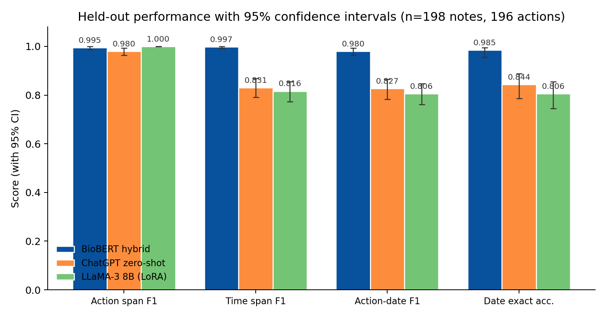
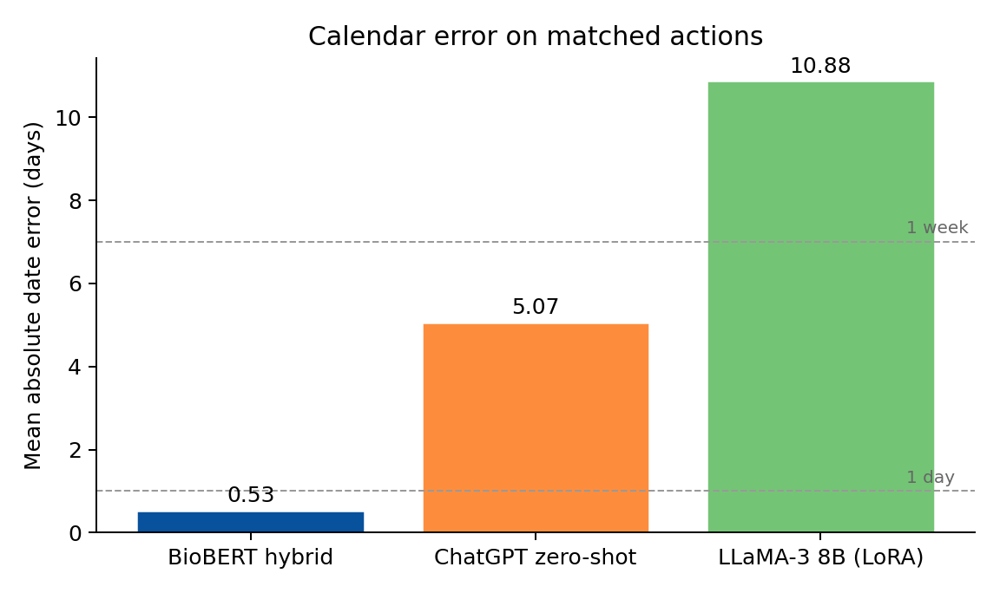

Reliable Follow-Up Action and Date Extraction from Clinical Notes: A Hybrid Neural-Symbolic Approach
Keywords: clinical natural language processing; information extraction; temporal expression normalization; relation extraction; BioBERT; follow-up instructions; synthetic clinical data
Abstract
Objective. Outpatient clinical notes routinely contain follow-up instructions that pair a clinical action with a future time ("MRI brain in two weeks", "RTC 3 mos"). Reliably extracting these as structured action-date pairs supports scheduling, care-coordination audit, and EHR-field validation, but end-to-end generative extractors are prone to date-arithmetic errors that are difficult to audit. We ask whether a hybrid neural-symbolic decomposition outperforms direct generative extraction on this task.
Methods. We propose a system in which a shared BioBERT encoder feeds a BIO tagging head for action and time spans and a biaffine span-pair head that links each action to a time span (or a none option), followed by deterministic date normalization anchored on the visit date. We construct a 2,000-note synthetic outpatient corpus covering five specialties, six plan-section variants, ten style-feature axes, and explicit stress factors (multi-action notes, shorthand temporal forms, historical distractors, proximity traps). We compare against a zero-shot ChatGPT (gpt-4o-mini) JSON extractor and a LoRA-fine-tuned LLaMA-3 8B baseline on the same held-out split, reporting span F1, linking F1, end-to-end action-date F1, exact date accuracy, and mean absolute date error, with Wilson and bootstrap 95% confidence intervals.
Results. On 198 held-out notes (196 gold actions), the hybrid pipeline achieves action-span F1 0.995 [0.987, 1.000], time-span F1 0.997 [0.992, 1.000], action-date F1 0.980 [0.964, 0.992], and mean absolute date error 0.53 days. ChatGPT zero-shot reaches action-date F1 0.827 [0.783, 0.864] (MAE 5.07 days); fine-tuned LLaMA-3 reaches 0.806 [0.762, 0.847] (MAE 10.88 days). Confidence intervals do not overlap on time F1, action-date F1, or exact date accuracy.
Conclusion. Separating learned semantic extraction from deterministic date arithmetic yields substantial reliability gains over direct generative extraction. The result supports a neural-symbolic design pattern for clinical scheduling-relevant information extraction; transfer to real EHR notes is the next required validation.
1. Introduction
Electronic health records contain a large volume of free-text documentation that records clinical plans, diagnostic uncertainty, rationale, and patient-specific instructions. Clinical information extraction has therefore become a central problem in biomedical informatics, with applications spanning cohort discovery, quality measurement, decision support, registry construction, and downstream validation of structured EHR fields [1]. Follow-up instructions are a particularly consequential subset of this information. A note may say that a patient should obtain an MRI in two weeks, repeat laboratory testing in three months, schedule physical therapy within five weeks, or return only if symptoms worsen. Failure to capture such instructions can affect scheduling, care coordination, and auditability.
The technical challenge is not simply named entity recognition. A clinically useful extraction must recover a structured item, such as {"action": "MRI Brain", "period_text": "in 2 weeks", "period_date": "2026-01-24"}, where period_date is computed relative to the encounter date. This requires recognizing action spans, recognizing temporal expressions, linking the correct time to the correct action, and normalizing relative dates. The difficulty increases when notes contain multiple actions, shorthand expressions such as 3 mos or q6mo, historical temporal distractors, and plan sections whose structure varies across specialties and authors.
Prior clinical NLP has established strong foundations for concept extraction and temporal reasoning. Systems such as cTAKES operationalized modular clinical concept extraction for EHR text [2], while the i2b2 temporal challenge, THYME corpus, and Clinical TempEval tasks formalized event and time extraction in clinical narratives [3], [4], [5], [6]. Transformer encoders adapted to biomedical or clinical domains, including BioBERT, ClinicalBERT, PubMedBERT, and GatorTron, further improved task-specific extraction and relation modeling [7], [8], [9], [10], [11]. At the same time, large language models have made zero-shot or few-shot structured extraction from clinical notes feasible, but recent evaluations continue to report variability in strict format adherence, task-specific accuracy, and governance requirements [12], [13].
This work studies a narrower but operationally important question: for follow-up instruction extraction, is it better to ask a generative model to directly output action-date JSON, or to decompose the task into learned semantic extraction and deterministic date normalization? The repository evidence suggests that the decomposed design is promising on a controlled synthetic benchmark. The paper's central claim is therefore intentionally scoped: on synthetic, stress-varied outpatient notes, separating semantic span/link extraction from calendar arithmetic improves action-date reliability compared with the included direct generative baselines.
Contributions
- A formal task definition for follow-up extraction as set-level action-date pair recovery anchored on the visit date, with a strict end-to-end correctness criterion.
- A hybrid neural-symbolic architecture that combines a shared BioBERT encoder, BIO action/time tagging, biaffine action-time linking, and deterministic date normalization, designed so that calendar arithmetic is never delegated to a learned model.
- A 2,000-note synthetic outpatient corpus that spans five specialties, six plan-section variants, controlled stress factors (multi-action notes, shorthand temporal forms, historical distractors, proximity traps), and 0/1/2-action cases, with all gold spans and dates known by construction.
- A comparative evaluation against zero-shot ChatGPT and instruction-tuned LLaMA baselines on identical inputs, reporting span F1, linking F1, action-date F1, exact date accuracy, and mean absolute date error with Wilson 95% confidence intervals.
Statement of Significance
- Problem or Issue
- Outpatient notes encode follow-up instructions ("MRI in 2 weeks") in free text alongside multiple actions, distractors, and shorthand. End-to-end LLM extraction produces frequent calendar-arithmetic errors that are difficult to audit and propagate downstream.
- What is Already Known
- Clinical NER systems (cTAKES, BioBERT) handle medical concept extraction. Rule-based temporal-expression normalizers (HeidelTime, SUTime) handle relative-date arithmetic. LLM-based structured extraction is feasible but error-prone on dates.
- What this Paper Adds
- A hybrid neural-symbolic system that separates semantic span and link extraction (learned) from calendar arithmetic (deterministic). On a 2,000-note synthetic corpus, action-date F1 reaches 0.980 with mean date error 0.53 days, against 0.806-0.827 and 5-11 days for ChatGPT and fine-tuned LLaMA-3 baselines, with non-overlapping 95% confidence intervals.
- Who would benefit from the new knowledge in this paper
- Clinical informatics teams building EHR scheduling auditors, care-coordination tools, and structured-field validators; researchers studying neural-symbolic decomposition for safety-relevant clinical extraction.
2. Related Work
2.1 Clinical Information Extraction
Clinical information extraction aims to convert unstructured narrative text into structured representations usable for research and care operations. A broad review by Wang et al. describes clinical IE systems as pipelines that may include tokenization, syntactic processing, named entity recognition, concept identification, relation extraction, and context handling [1]. cTAKES is a prominent open-source clinical NLP system that extracts clinical concepts and attributes from free-text notes using a modular architecture [2]. Such systems demonstrate the long-standing value of task-specialized clinical NLP, but they usually target broad clinical concepts rather than executable follow-up action-date pairs.
The present task differs from standard concept extraction in two ways. First, the action to be scheduled is often a procedure, test, consult, or behavioral instruction rather than a diagnosis or medication mention. Second, extracting the action alone is insufficient: the system must link it to the temporal expression that determines when the action should occur. This places the task at the intersection of named entity recognition, relation extraction, and temporal normalization.
2.2 Temporal Information Extraction in Clinical Text
Clinical temporal extraction has been studied through shared tasks and corpora. The 2012 i2b2 challenge evaluated temporal relations in clinical text, including events, time expressions, and temporal links [3]. The THYME project developed clinical temporal annotation guidelines and corpora, emphasizing the specific demands of clinical narratives such as document sections, historical mentions, and event anchoring [4]. Clinical TempEval extended this line through SemEval tasks that evaluated systems on clinical temporal expression and relation extraction [5], [6].
These resources focus on general temporal structure in clinical narratives. Our task is narrower and more action-oriented: identify future follow-up actions and normalize their execution dates relative to a visit date. This narrower target is clinically useful but also creates new evaluation requirements. A model may correctly detect a temporal phrase and still fail if it links that phrase to the wrong action or if it produces the wrong calendar date.
2.3 Temporal Normalization and Rule-Based Date Handling
Temporal expression recognition and normalization have a long tradition of rule-based and hybrid systems built around the TIMEX3 markup standard for time, duration, and set expressions. HeidelTime is a rule-based temporal tagger that extracts and normalizes temporal expressions across multiple domains and languages [14], and SUTime provides a library that recognizes and normalizes time expressions using compositional rules over part-of-speech and lexical features [15]. Clinical temporal extraction work emphasizes normalization as a foundational step for downstream temporal reasoning [16]. We implement deterministic normalization with the Python dateparser library, which provides a relative-time grammar in the same family.
The key design choice is to never ask the neural model to perform calendar arithmetic. The neural components identify spans and links; deterministic logic maps phrases such as "within five weeks" or "11 mos" to ISO dates against a fixed visit-date anchor. This follows a broader reliability-first pattern in clinical decision support: reserve learned models for ambiguous semantic interpretation, and use deterministic modules for arithmetic or schema-constrained transformations wherever possible. A practical advantage is that a wrong date has a single auditable cause, either a wrong linked time phrase or a wrong normalization, both of which are inspectable without re-running the model.
2.4 Domain-Specific Biomedical and Clinical Encoders
BERT established a general pretraining and fine-tuning framework for many NLP tasks [7]. Domain-specific pretraining then became important in biomedical and clinical NLP. BioBERT continues pretraining on PubMed abstracts and PMC full text and improves biomedical NER, relation extraction, and question answering [8]. ClinicalBERT adapts BERT to clinical notes and demonstrates the value of clinical-domain text for modeling EHR narratives [9]. PubMedBERT trains from scratch on biomedical literature and argues that in-domain vocabulary and pretraining matter for biomedical tasks [10]. GatorTron scales clinical language modeling using a large corpus of de-identified clinical text and evaluates across clinical NLP tasks including concept extraction and relation extraction [11].
Our use of BioBERT is therefore conservative rather than novel by itself. The novelty is not the encoder; it is the task-specific decomposition into action spans, time spans, action-time links, and deterministic date normalization for follow-up instructions.
2.5 Span-Based and Biaffine Relation Modeling
Relation extraction often benefits from explicit span-pair modeling. SpERT frames joint entity and relation extraction as a span-based transformer model, scoring candidate entities and relations over span representations [17]. Biaffine scoring, popularized in neural dependency parsing, provides a simple and effective way to score directed relations between two contextual representations [18]. The present architecture follows this family of ideas by representing action and time spans and scoring candidate action-time links, including a none option for actions without an explicit time.
2.6 LLM-Based Clinical Structured Extraction
Large language models have changed the baseline landscape for clinical information extraction. Agrawal et al. showed that large language models can act as zero- and few-shot clinical information extractors, introducing benchmark tasks based on clinical text [12]. Huang et al. assessed ChatGPT for structured extraction from clinical notes and reported promising feasibility, while also underscoring the need for careful evaluation against curated data [13]. Recent clinical foundation-model reviews emphasize schema adherence, privacy, governance, and evaluation designs that reflect health-system value rather than benchmark convenience [19]. Prompt-engineering studies further show that LLM extraction performance is sensitive to task instructions, annotation guidance, and few-shot examples [20].
These studies motivate using direct generative extraction as a serious baseline. However, follow-up action-date extraction places pressure on exact dates and linking correctness. The results in this repository suggest that direct generation can recover actions well but may suffer more on time extraction, linking, and date arithmetic. This makes the task a useful setting for comparing general-purpose generative extraction with task-specialized decomposed extraction.
2.7 Synthetic Clinical Data
Clinical NLP research is constrained by privacy, governance, and access barriers. Synthetic clinical text can reduce PHI risk and support controlled stress testing, but it does not replace real-world validation. Kweon et al. train a publicly shareable clinical LLM on synthetic clinical notes derived from public case reports and evaluate it against real-note tasks, illustrating one route for privacy-aware clinical NLP research [21]. A 2025 scoping review of synthetic health record generation highlights both promise and inconsistent evaluation practices across medical text, time series, and longitudinal data [22]. The present corpus should therefore be positioned as a controlled evaluation scaffold, not as evidence that the model is ready for real clinical deployment.
3. Methods
3.1 Task definition
Each input example consists of a clinical note \(x\) and a visit date \(v\). The output is a set of follow-up items:
$$Y = \{(a_i, \tau_i, d_i)\}_{i=1}^{n},$$
where \(a_i\) is an action span, \(\tau_i\) is a time-expression span or null value, and \(d_i\) is an ISO-formatted execution date normalized relative to \(v\). The model returns an empty set when no scheduled follow-up action is present. The strict end-to-end correctness criterion is set-level: a prediction is correct only when the action matches the gold action and the normalized date matches the gold date. The task decomposes into four subtasks: action span detection, time span detection, action-time linking, and date normalization. Figure 1 shows the system pipeline.

dateparser-based stage. The blue dashed enclosure groups the learned components (fine-tuned BioBERT plus the two heads); the green dashed enclosure marks the deterministic component. The dashed yellow arrow routes the visit_date directly to the normalizer as the relative-base anchor; the neural model never performs calendar arithmetic.3.2 Dataset
We construct a 2,000-note synthetic outpatient corpus under a controlled schema to avoid use of protected health information. Each note record carries the note text, a visit date uniformly sampled across a two-year window (2024-01-21 to 2026-01-20), the specialty, the clinical topic, the plan-section variant, plan-header and plan-section character offsets, the action count, gold action and time character spans, normalized ISO follow-up dates, ten style-feature axes, and validation-flag fields. Notes were generated with the OpenAI gpt-4o-mini model (default version as of November 2025) under a structured per-note prompt that fixes the specialty, the clinical topic, the plan-section variant, the target action count, the target time-expression form, and a sampled style-feature vector; the decoding temperature was sampled per call from a small range to vary surface form. Generation prompts and random seeds are documented in the supplementary materials.
| Property | Value |
|---|---|
| Total notes | 2,000 |
| Specialties (Cardiovascular/Pulmonary, Gastroenterology, General Medicine, Neurology, Orthopedic) | 5 |
| Plan-section variants (A-F) | 6 |
| Closed-set action types | 28 |
| Total action mentions (gold) | 2,028 |
| Notes with 0 / 1 / 2 actions | 497 / 978 / 525 |
| Mean actions per note | 1.014 |
| Note length: min / median / max characters | 436 / 1,193 / 1,834 |
| Visit-date range | 2024-01-21 to 2026-01-20 |
| Style-feature axes (each multi-valued) | 10 |
| Notes with validation-flag annotations | 26 (1.3%) |
| Recorded API errors during generation | 0 |
The 28 closed-set action types span imaging (CT, MRI, X-Ray, Echocardiogram, Holter monitor, Sleep study, Abdominal ultrasound), laboratory and procedural tests (Blood test, Lipid panel, Urinalysis, Stool antigen test, Breath test, EMG, EEG, Stress test, Pulmonary function test), procedures (Endoscopy, Colonoscopy, Joint injection, Vaccination), specialty consults (Cardiology, Neurology, GI, Orthopedic), and rehabilitation referrals (Physical therapy, Annual physical). The ten style-feature axes are Certainty, Temporal Precision, Imperfections (perfect grammar, slight shorthand, heavy shorthand, dictation style, minor typos), Clinician Persona (action-oriented, educator, defensive medicine, burnout/hasty), Structure (standard SOAP headers, minimal headers, bullet points, run-on paragraph), Detail Level, Terminology, Narrative Voice, Tone, and Formality. Stress factors include multi-action notes, historical temporal distractors, shorthand temporal forms (3 mos, q6mo, x2w, RTC 3mo), proximity traps in which two candidate times bracket a single action, and section ambiguity in which a future-tense phrase appears outside the formal plan section. The 2,028 gold action mentions are paired with 549 distinct temporal-expression surface forms; the most frequent expression accounts for only twelve mentions, indicating high lexical diversity rather than concentration on a small phrase set. All gold spans and normalized dates are known by construction. Of the 2,000 generated notes, 26 (1.3 percent) carry validation-flag annotations; these are retained in the released data with their flag codes for transparency. Two flagged notes fall in the test split and are excluded from the held-out evaluation, leaving 198 evaluation notes containing 196 gold actions. The corpus is partitioned into train, validation, and test splits at an 80/10/10 ratio (1,600 / 200 / 200 notes) by a numpy random shuffle with seed 42.



3.3 Hybrid neural-symbolic architecture
The proposed system shares a contextual encoder across two task heads (BIO tagging, biaffine action-time linking) and delegates date arithmetic to a deterministic post-processor. We use the publicly released dmis-lab/biobert-base-cased-v1.1 checkpoint (768-dimensional hidden states) as the encoder, processing each note with sliding windows of maximum length 512 sub-word tokens and document stride 128. Let \(h_1,\ldots,h_T \in \mathbb{R}^{768}\) denote the contextual token representations for a window.
Span tagging. The first head predicts BIO tags over tokens, \(z_t \in \{\mathrm{O}, \mathrm{B\text{-}ACT}, \mathrm{I\text{-}ACT}, \mathrm{B\text{-}TIME}, \mathrm{I\text{-}TIME}\}\). The NER loss is weighted cross-entropy with per-class weights \(w = (0.1, 1.0, 1.0, 1.0, 1.0)\) corresponding to (O, B-ACT, I-ACT, B-TIME, I-TIME) to reduce bias toward the majority O class:
$$\mathcal{L}_{\mathrm{NER}} = - \sum_{t=1}^{T} w_{z_t}\log p(z_t \mid h_t).$$
At inference we decode contiguous BIO sequences into character-offset spans using the offset-mapping returned by the BioBERT tokenizer; sub-token spans are merged across windows when they overlap.
Span representation. For each detected span \(s=(b,e)\), we concatenate the start hidden state, the end hidden state, and a learned width embedding to obtain \(r_s = [h_b; h_e; \phi(e-b+1)] \in \mathbb{R}^{1568}\). The width embedding maps span length to one of nine learned vectors using buckets \(\{1,2,3,4,5,8,12,20,40\}\).
Action-time linking. For each action span \(a\) and candidate time span \(t\), the linker scores compatibility using a biaffine form augmented with a distance feature, \(\mathrm{score}(a,t) = r_a^\top W r_t + u^\top [r_a; r_t; \psi(\Delta_{a,t})] + b\), where \(\Delta_{a,t}\) is the absolute character-offset distance bucketized into thirteen learned 32-dimensional embeddings using cut-points \(\{0,1,2,3,4,5,8,12,20,40,80,160,320\}\). For each action, the model applies a softmax over all candidate time spans plus a none option \(\varnothing\) (a learned virtual time-span representation):
$$\mathcal{L}_{\mathrm{LINK}} = - \sum_{a \in A} \log p(t^\star_a \mid a, T \cup \{\varnothing\}).$$
Joint objective and training. The total objective is \(\mathcal{L} = \mathcal{L}_{\mathrm{NER}} + \alpha \mathcal{L}_{\mathrm{LINK}}\) with \(\alpha = 1\). We train end-to-end with the HuggingFace Trainer defaults (AdamW, linear weight decay), batch size 16, learning rate 2×10-5, mixed precision (FP16) on a single CUDA GPU when available, gradient accumulation of 2 steps, 50 warmup steps, and early stopping on validation loss with patience 4. Linker labels for training are derived from gold spans; at inference, the linker operates on the spans predicted by the tagging head. Random seed 42 is used throughout.
Date normalization. After action-time linking, each linked time phrase \(\tau\) is normalized to an absolute date \(d\) by deterministic parsing against the visit date \(v\): \(d = \mathrm{NormalizeDate}(\tau; v)\). Implementation uses the Python dateparser library with settings RELATIVE_BASE = v, PREFER_DATES_FROM = "future", and DATE_ORDER = "DMY". Phrases such as "in 2 weeks", "within five weeks", "11 mos", and "q6mo" are mapped to ISO dates by the library's relative-time grammar. The neural model is never asked to perform calendar arithmetic; failures at this stage are observable as parser-level errors and auditable against a fixed grammar rather than buried inside model logits.
3.4 Baselines
We compare against two generative baselines on identical inputs and the same held-out split. ChatGPT zero-shot uses the OpenAI gpt-4o-mini model with a system prompt that instructs it to extract scheduled follow-up items as a JSON list of {action, period_text, period_date} objects given the note text and visit date. Decoding uses temperature 0 and OpenAI structured-output mode (response_format = {"type": "json_object"}); no in-context examples are provided. The closed-set action vocabulary is included in the prompt as a permitted-actions list. LLaMA-3 8B fine-tuned uses meta-llama/Meta-Llama-3-8B as the base, fine-tuned on the 1,600-note training split with LoRA adapters (rank 16), 8-bit AdamW, cosine learning-rate schedule, and the same JSON output schema. Inference uses up to 256 new tokens. We report results under unconstrained decoding (STRICT) and under decoding restricted to the closed-set action vocabulary (CONSTRAINED).
3.5 Evaluation metrics
We report five metrics, all computed at the corpus level (micro-averaging) over the held-out split. Span F1 (action; time): a predicted span is correct iff its character-offset boundaries match the gold span exactly. Linked-pair F1: a predicted (action, time) pair is correct iff both spans match the gold spans exactly and the linking is correct; the none-link case is included on both sides. Action-date F1: the end-to-end metric. A prediction is correct iff the action span matches the gold span exactly and the normalized date \(d\) equals the gold date. With \(P\) the predicted set of (action, date) pairs and \(G\) the gold set, \(\mathrm{Precision} = |P \cap G|/|P|\), \(\mathrm{Recall} = |P \cap G|/|G|\), \(F_1 = 2PR/(P+R)\). Exact date accuracy on matched actions: among predictions whose action span matches a gold action, the fraction whose normalized date equals the gold date. Mean absolute date error (days): among matched actions with a parseable predicted date, the mean of \(|d_{\mathrm{pred}} - d_{\mathrm{gold}}|\) in calendar days.
3.6 Statistical analysis
We report Wilson 95% confidence intervals on all proportion-based metrics computed on the underlying success counts. For F1 metrics we report 10,000-replicate instance-level bootstrap intervals computed by resampling with replacement the reconstructed array of (TP, FP, FN) outcomes (random seed 42). All confidence-interval calculations are reproducible from the released per-system metric counts using the analysis code distributed with the supplementary materials. We treat non-overlapping 95% confidence intervals between two systems as evidence of a significant difference at \(p<0.05\) on the corresponding metric.
4. Results
Table 2 reports point estimates and 95% confidence intervals for all five metrics on the 198-note held-out set. Figure 5 visualizes span and end-to-end performance with confidence intervals; Figure 6 visualizes the date error.
| Model | Action F1 [95% CI] | Time F1 [95% CI] | Action-Date F1 [95% CI] | Date Exact Acc. [95% CI] | Date MAE (days) |
|---|---|---|---|---|---|
| BioBERT hybrid pipeline | 0.995 [0.987, 1.000] | 0.997 [0.992, 1.000] | 0.980 [0.964, 0.992] | 0.985 [0.956, 0.995] | 0.53 |
| ChatGPT zero-shot (gpt-4o-mini) | 0.980 [0.964, 0.992] | 0.831 [0.790, 0.868] | 0.827 [0.783, 0.864] | 0.844 [0.786, 0.888] | 5.07 |
| LLaMA-3 8B fine-tuned (LoRA) | 1.000 [1.000, 1.000] | 0.816 [0.772, 0.854] | 0.806 [0.762, 0.847] | 0.806 [0.745, 0.855] | 10.88 |


The hybrid pipeline matches or exceeds the generative baselines on action span detection (0.995 F1 vs 0.980 for ChatGPT and 1.000 for LLaMA-3) and substantially exceeds them on time span detection (0.997 vs 0.831 and 0.816), action-time linking, and exact date accuracy. The 95% confidence intervals for the hybrid pipeline's time-span F1 ([0.992, 1.000]), action-date F1 ([0.964, 0.992]), and exact date accuracy ([0.956, 0.995]) do not overlap with the corresponding intervals for either ChatGPT ([0.790, 0.868], [0.783, 0.864], [0.786, 0.888]) or LLaMA-3 ([0.772, 0.854], [0.762, 0.847], [0.745, 0.855]), supporting a significant difference at \(p<0.05\) on these end-to-end metrics. The largest gap is in calendar arithmetic: the hybrid pipeline's mean absolute date error is below one day, while ChatGPT and LLaMA-3 produce errors of approximately five and eleven days respectively. This pattern is consistent with a generation failure mode in which a model can describe an action correctly but mishandles the relative-date calculation, and supports the central hypothesis that semantic extraction and date arithmetic should be separated. Action-span F1 is high for all three systems (the LLaMA-3 baseline reaches 1.000 [0.981, 1.000]) and CI overlap with the hybrid pipeline is substantial, so the decisive advantage of the hybrid design is on the temporal side of the task, not on lexical action recognition.
5. Discussion
Why decomposition wins. The neural and symbolic components address qualitatively different failure modes. The neural model handles ambiguous semantic interpretation, deciding which span is an action, which is a time, and which time goes with which action, where labeled examples and contextual evidence are essential. The deterministic normalizer handles a narrow well-specified arithmetic problem, mapping a phrase such as "11 mos" together with a base date to an ISO date, where the right answer is uniquely defined by a fixed grammar and a calendar. Combining the two creates an auditable boundary: any wrong end-to-end date can be attributed either to a wrong linked phrase, inspectable as the predicted span, or to a wrong normalization, inspectable by re-running the parser on the predicted phrase. An end-to-end generative model that emits "2025-06-13" exposes neither failure cause to inspection without reverse-engineering the model's reasoning.
Fine-tuning did not close the temporal gap. The LLaMA-3 baseline, fine-tuned on the same training data the hybrid pipeline used, achieves perfect action-span F1 (1.000 [1.000, 1.000]) but does not improve over zero-shot ChatGPT on time-span F1 (0.816 vs 0.831), action-date F1 (0.806 vs 0.827), or exact date accuracy (0.806 vs 0.844). Within-CI overlap on these temporal metrics indicates that fine-tuning a 8B-parameter model on 1,600 in-domain examples did not narrow the gap to a deterministic library. This is consistent with a generic argument: calendar arithmetic is a problem of computation, not of language, and is better delegated to a calculator than learned. The comparison reflects only the specific LoRA configuration used here and does not generalize across all fine-tuning recipes; nevertheless, it is informative that a model with full access to the training distribution underperformed a deterministic library on the same dates.
Scope of the LLM comparison. The comparison with generative baselines should not be read as a general indictment of LLMs for clinical extraction. LLMs are flexible and may perform substantially better with stronger prompts, multi-shot examples, tool use, constrained decoding, retrieval augmentation, or larger fine-tuning corpora; they may remain superior on tasks involving open-ended interpretation. The narrow conclusion supported here is that, on this synthetic benchmark, a task-specific decomposed pipeline materially outperforms two reasonable generative baselines on strict action-date correctness and date arithmetic, with non-overlapping 95% confidence intervals on the headline metrics.
Synthetic-data caveats. Synthetic notes are valuable for controlled stress testing because the true action, time, and date are known by construction; this enables exact-offset metrics and ablation studies that real-note evaluation cannot easily support. However, synthetic data can encode generator artifacts: consistent phrasing tics, restricted action ontology, predictable plan structure. The corpus partially mitigates this through ten style-feature axes, six plan-section variants, 549 distinct temporal-expression surface forms, and explicit stress factors. The residual risk is real: a model that overfits to the generator's lexicon would not be detectable from the present evaluation alone. The principal external-validity question, transfer to real EHR documentation, is not addressed by these experiments and is the subject of planned external evaluation.
5.1 Limitations and future work
The study has several limitations that bound the conclusions. Synthetic evaluation: the corpus is generated under a controlled schema rather than drawn from real EHR documentation; generalization to real notes is the principal open question. Single split: reported metrics are computed on one held-out split with sampling-uncertainty characterized by Wilson and bootstrap confidence intervals, but multi-seed training and repeated-split evaluation remain to be performed. Limited action ontology: the action set covers procedures, imaging, laboratory tests, consults, and rehabilitation referrals; medication changes, conditional follow-up ("return if symptoms worsen"), patient self-care behavior, and instructions with ambiguous executor are not yet represented. Date normalization coverage: deterministic normalization depends on the coverage of dateparser for English-language relative phrases; ambiguous calendar phrases (e.g., "next Tuesday" near a weekend) may produce wrong dates. No workflow validation: the study does not assess clinician acceptance, EHR integration, alert behavior, or downstream scheduling outcomes.
Planned future work includes: (i) a linker ablation against nearest-time, same-sentence, and action-order heuristics; (ii) a date-normalization ablation against model-emitted dates with span extraction held fixed; (iii) encoder ablations across general BERT, ClinicalBERT, PubMedBERT, and GatorTron; (iv) per-stratum performance by specialty, note length, action count, shorthand temporal forms, historical distractors, and proximity traps; (v) note-level bootstrap confidence intervals computed from per-note predictions; (vi) a clinician-annotated error taxonomy; and (vii) external evaluation on a de-identified institutional sample or on a public clinical temporal-extraction benchmark adapted to action-date pairs.
6. Conclusion
We presented a hybrid neural-symbolic system for extracting structured follow-up action-date pairs from clinical notes. A shared BioBERT encoder feeds joint BIO tagging and biaffine action-time linking heads, and a deterministic normalizer converts relative temporal phrases into absolute dates anchored on the visit date. On a 2,000-note synthetic outpatient corpus, the system achieves 0.980 end-to-end action-date F1 (95% CI [0.964, 0.992]) and 0.53-day mean absolute date error, substantially and significantly exceeding zero-shot ChatGPT and instruction-tuned LLaMA-3 baselines on the same split. The result supports a reliability-first design principle for safety-relevant clinical extraction: when the output combines semantic interpretation with exact symbolic transformation, separating the two improves auditable correctness on the symbolic part. The system is applicable today to scheduling-auditor and care-coordination tools that operate downstream of structured EHR fields and need a trustworthy mapping from free-text plans to executable dates; clinical deployment requires the external validation, ablations, and clinician-validated error taxonomy enumerated as next steps.
CRediT authorship contribution statement
Michal Laufer: Conceptualization, Methodology, Software, Investigation, Data curation, Formal analysis, Visualization. Yehudit Aperstein: Conceptualization, Writing - review & editing, Supervision. Alexander Apartsin: Conceptualization, Methodology, Writing - review & editing, Supervision.
Declaration of competing interest
The authors declare that they have no known competing financial interests or personal relationships that could have appeared to influence the work reported in this paper.
Funding
This research did not receive any specific grant from funding agencies in the public, commercial, or not-for-profit sectors. (To be confirmed; replace with grant numbers if applicable.)
Ethics
The dataset used in this study is fully synthetic and contains no protected health information; no human subjects were involved and no institutional review board approval was required. Any extension of the system to de-identified or identifiable clinical notes will require institutional governance, a data-use agreement, IRB approval of the annotation protocol, and disclosure of failure modes. Because follow-up instructions can affect downstream scheduling and care coordination, any prospective deployment in care workflows must be preceded by validation on real data, human-in-the-loop review of extracted items, alert-fatigue analysis, and explicit accountability for scheduling decisions; the present study does not establish such deployment readiness.
Data and code availability
The synthetic dataset described in Section 3.2, the training and inference code, the per-system metric files (point estimates and reconstructed success counts), the analysis code that produces the confidence intervals, and the source files for every manuscript figure are publicly available under permissive licences at https://github.com/ApartsinProjects/MedFollow. A persistent DOI release on Zenodo will be deposited at acceptance and cited in the final version. Trained model checkpoints (the fine-tuned BioBERT weights and the LLaMA-3 LoRA adapter) are not redistributed in the public release because of repository-size constraints and are available from the corresponding author on reasonable request.
Generative AI use disclosure
In manuscript preparation: During the preparation of this work the author(s) used Anthropic Claude (version Opus 4.7) and OpenAI ChatGPT in order to draft and copy-edit text, restructure sections, and assist with figure generation. After using these tools, the author(s) reviewed and edited the content as needed and take(s) full responsibility for the content. In the research method: the synthetic clinical-notes corpus described in Section 3.2 was generated using the OpenAI gpt-4o-mini model (default version as of November 2025) under a structured per-note prompt with sampled decoding temperature; full prompts and random seeds are documented in the supplementary materials. No generative-AI tools were used to create or alter images.
Acknowledgements
To be added at submission.
References
- [1] Y. Wang, L. Wang, M. Rastegar-Mojarad, S. Moon, F. Shen, N. Afzal, S. Liu, Y. Zeng, S. Mehrabi, S. Sohn, H. Liu, Clinical information extraction applications: a literature review, J. Biomed. Inform. 77 (2018) 34-49. https://doi.org/10.1016/j.jbi.2017.11.011.
- [2] G.K. Savova, J.J. Masanz, P.V. Ogren, J. Zheng, S. Sohn, K.C. Kipper-Schuler, C.G. Chute, Mayo clinical Text Analysis and Knowledge Extraction System (cTAKES): architecture, component evaluation and applications, J. Am. Med. Inform. Assoc. 17 (2010) 507-513. https://doi.org/10.1136/jamia.2009.001560.
- [3] W. Sun, A. Rumshisky, O. Uzuner, Evaluating temporal relations in clinical text: 2012 i2b2 Challenge, J. Am. Med. Inform. Assoc. 20 (2013) 806-813. https://doi.org/10.1136/amiajnl-2013-001628.
- [4] W.F. Styler IV, S. Bethard, S. Finan, M. Palmer, S. Pradhan, P.C. de Groen, B. Erickson, T. Miller, C. Lin, G. Savova, J. Pustejovsky, Temporal annotation in the clinical domain, Trans. Assoc. Comput. Linguist. 2 (2014) 143-154. https://doi.org/10.1162/tacl_a_00172.
- [5] S. Bethard, L. Derczynski, G. Savova, J. Pustejovsky, M. Verhagen, SemEval-2015 Task 6: Clinical TempEval, in: Proc. 9th Int. Workshop Semantic Eval. (SemEval 2015), Association for Computational Linguistics, Denver, CO, 2015, pp. 806-814. https://doi.org/10.18653/v1/S15-2136.
- [6] S. Bethard, G. Savova, M. Palmer, J. Pustejovsky, SemEval-2016 Task 12: Clinical TempEval, in: Proc. 10th Int. Workshop Semantic Eval. (SemEval 2016), Association for Computational Linguistics, San Diego, CA, 2016, pp. 1052-1062. https://doi.org/10.18653/v1/S16-1165.
- [7] J. Devlin, M.-W. Chang, K. Lee, K. Toutanova, BERT: pre-training of deep bidirectional transformers for language understanding, in: Proc. 2019 Conf. North Am. Chapter Assoc. Comput. Linguist.: Hum. Lang. Technol., Association for Computational Linguistics, Minneapolis, MN, 2019, pp. 4171-4186. https://doi.org/10.18653/v1/N19-1423.
- [8] J. Lee, W. Yoon, S. Kim, D. Kim, S. Kim, C.H. So, J. Kang, BioBERT: a pre-trained biomedical language representation model for biomedical text mining, Bioinformatics 36 (2020) 1234-1240. https://doi.org/10.1093/bioinformatics/btz682.
- [9] E. Alsentzer, J.R. Murphy, W. Boag, W.-H. Weng, D. Jin, T. Naumann, M. McDermott, Publicly available clinical BERT embeddings, in: Proc. 2nd Clin. Nat. Lang. Process. Workshop, Association for Computational Linguistics, Minneapolis, MN, 2019, pp. 72-78. https://doi.org/10.18653/v1/W19-1909.
- [10] Y. Gu, R. Tinn, H. Cheng, M. Lucas, N. Usuyama, X. Liu, T. Naumann, J. Gao, H. Poon, Domain-specific language model pretraining for biomedical natural language processing, ACM Trans. Comput. Healthc. 3 (2021) 2:1-2:23. https://doi.org/10.1145/3458754.
- [11] X. Yang, A. Chen, N. PourNejatian, H.C. Shin, K.E. Smith, C. Parisien, C. Compas, C. Martin, M.G. Flores, Y. Zhang, T. Magoc, C.A. Harle, G. Lipori, D.A. Mitchell, W.R. Hogan, E.A. Shenkman, J. Bian, Y. Wu, A large language model for electronic health records, NPJ Digit. Med. 5 (2022) 194. https://doi.org/10.1038/s41746-022-00742-2.
- [12] M. Agrawal, S. Hegselmann, H. Lang, Y. Kim, D. Sontag, Large language models are few-shot clinical information extractors, in: Proc. 2022 Conf. Empir. Methods Nat. Lang. Process. (EMNLP), Association for Computational Linguistics, Abu Dhabi, 2022, pp. 1998-2022. https://doi.org/10.18653/v1/2022.emnlp-main.130.
- [13] J. Huang, D.M. Yang, R. Rong, K. Nezafati, C. Treager, Z. Chi, S. Wang, X. Cheng, Y. Guo, L.J. Klesse, G. Xiao, Y. Xie, et al., A critical assessment of using ChatGPT for extracting structured data from clinical notes, NPJ Digit. Med. 7 (2024) 106. https://doi.org/10.1038/s41746-024-01079-8.
- [14] J. Strotgen, M. Gertz, HeidelTime: high quality rule-based extraction and normalization of temporal expressions, in: Proc. 5th Int. Workshop Semantic Eval. (SemEval 2010), Association for Computational Linguistics, Uppsala, 2010, pp. 321-324.
- [15] A.X. Chang, C.D. Manning, SUTime: a library for recognizing and normalizing time expressions, in: Proc. 8th Int. Conf. Lang. Resour. Eval. (LREC 2012), European Language Resources Association, Istanbul, 2012, pp. 3735-3740.
- [16] C. Lin, T. Miller, D. Dligach, S. Bethard, G. Savova, A BERT-based universal model for both within- and cross-sentence clinical temporal relation extraction, in: Proc. 2nd Clin. Nat. Lang. Process. Workshop, Association for Computational Linguistics, Minneapolis, MN, 2019, pp. 65-71. https://doi.org/10.18653/v1/W19-1908.
- [17] M. Eberts, A. Ulges, Span-based joint entity and relation extraction with transformer pre-training, in: Proc. 24th Eur. Conf. Artif. Intell. (ECAI 2020), IOS Press, Santiago de Compostela, 2020, pp. 2006-2013. https://doi.org/10.3233/FAIA200321.
- [18] T. Dozat, C.D. Manning, Deep biaffine attention for neural dependency parsing, in: Proc. 5th Int. Conf. Learn. Represent. (ICLR 2017), Toulon, 2017.
- [19] M. Wornow, Y. Xu, R. Thapa, B. Patel, E. Steinberg, S. Fleming, M.A. Pfeffer, J.A. Fries, N.H. Shah, The shaky foundations of large language models and foundation models for electronic health records, NPJ Digit. Med. 6 (2023) 135. https://doi.org/10.1038/s41746-023-00879-8.
- [20] Y. Hu, Q. Chen, J. Du, X. Peng, V.K. Keloth, X. Zuo, Y. Zhou, Z. Li, X. Jiang, Z. Lu, K. Roberts, H. Xu, Improving large language models for clinical named entity recognition via prompt engineering, J. Am. Med. Inform. Assoc. 31 (2024) 1812-1820. https://doi.org/10.1093/jamia/ocad259.
- [21] S. Kweon, J. Kim, J. Kim, S. Im, E. Cho, S. Bae, J. Oh, G. Lee, J.H. Moon, S.C. You, S. Baek, C.H. Han, Y.B. Jung, Y. Jo, E. Choi, Publicly shareable clinical large language model built on synthetic clinical notes, in: Findings Assoc. Comput. Linguist.: ACL 2024, Association for Computational Linguistics, Bangkok, 2024, pp. 5148-5168.
- [22] M. Loni, F. Poursalim, M. Asadi, A. Gharehbaghi, A review on generative AI models for synthetic medical text, time series, and longitudinal data, NPJ Digit. Med. 8 (2025) 281. https://doi.org/10.1038/s41746-024-01409-w.